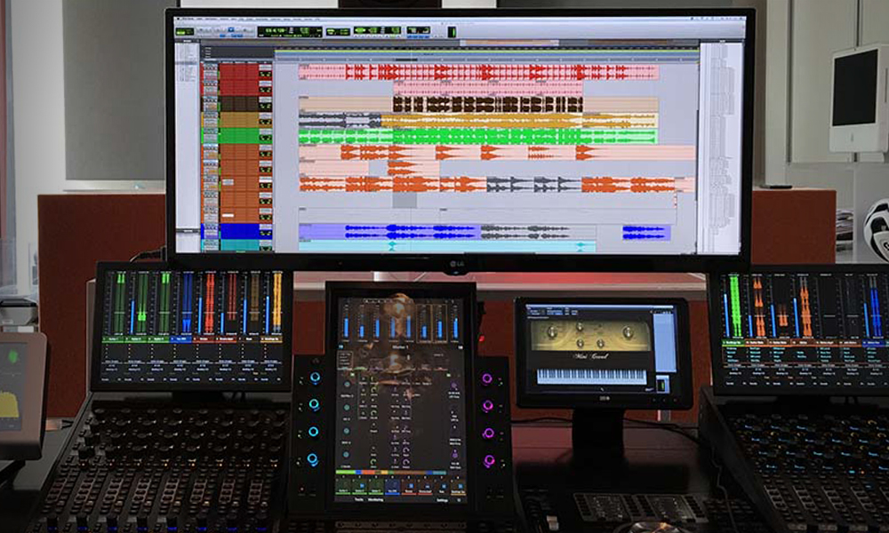

-Justificación (Razones por las que es útil aprender a usar el programa)
-Trabajo (Explicación de la instalación y las funciones básicas del programa)
-Conclusión (Resultado final que se obtine al relizar los tutoriales)
-Bibliografia (Lugares donde me he documentado para realizar el trabajo)
